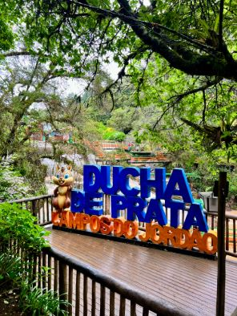
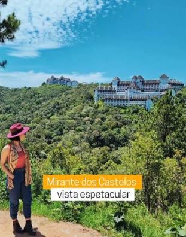
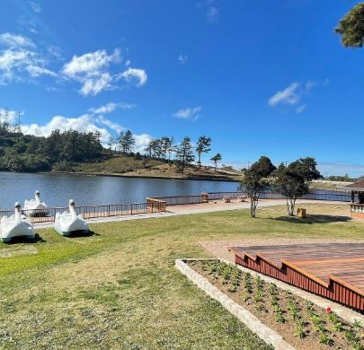
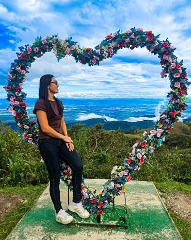
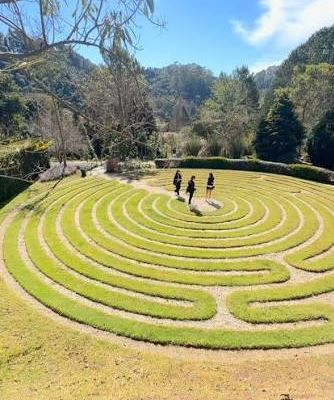
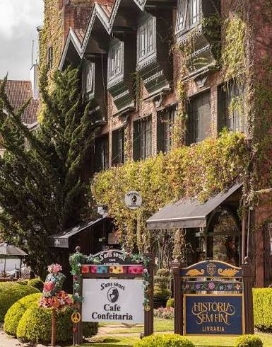
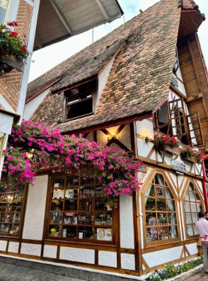
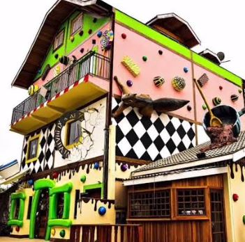
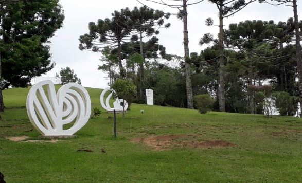
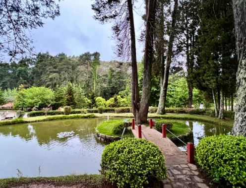

Informações Importantes & Benefícios
Transfers Executivos & Aeroportos
- Aeroportos de SP (Guarulhos GRU, Congonhas CGH, Viracopos VCP)
- Aeroportos do RJ (Galeão GIG, Santos Dumont SDU)
- São Paulo Capital & Grande SP
- Rota da Fé: Aparecida do Norte e Canção Nova
 Veículo Executivo & Conforto
Veículo Executivo & Conforto
Rota do Pico (Vista Panorâmica)
Passeio contemplativo leve de altitude, pensado para fotos lindas sem caminhadas cansativas.

Ducha de Prata
Mirante do Castelo
Lago Gelado
Pico do Itapeva Loja de Malhas
Loja de Malhas
 Fábrica Chocolate
Fábrica Chocolate
Rota Amantikir & Jardinagem
Jardins contemplativos com acessibilidade para uma caminhada tranquila e um café aconchegante.

Parque Amantikir
Café Sans Souci Fábrica Chocolate
Fábrica Chocolate
 Pico do Itapeva
Pico do Itapeva
Rota das Vinícolas & Azeites Artesanais
Uma experiência sofisticada de degustação nos olivais e vinhedos da Mantiqueira com conforto total.
 Santa Maria / Essenza
Santa Maria / Essenza
 Azeite Sabiá
Azeite Sabiá
 OLIQ Azeites
OLIQ Azeites
 Raízes do Baú
Raízes do Baú
Roteiro Leve de Compras & Sabores
O melhor do comércio de inverno e gastronomia de Capivari. O concierge carrega todas as sacolas para você.

Vila Capivari Ducha de Prata
Ducha de Prata
 Fábricas de Lãs
Fábricas de Lãs

Chocolates ArtesanaisMuseus, Cultura & Espiritualidade
Imersão cultural em espaços arborizados, planos e com área de descanso.
 Palácio Boa Vista
Palácio Boa Vista

Felícia Leirner
Mosteiro São João Casa da Xilogravura
Casa da Xilogravura
Santo Antônio do Pinhal
Cidade pacata e charmosa. Roteiro adaptado sem escadarias ou trilhas cansativas.
 Estação Eugênio Lefèvre
Estação Eugênio Lefèvre
 Azeite Sabiá
Azeite Sabiá
 Mirante & Matriz
Mirante & Matriz
 A Bodega
A Bodega
 Pico Agudo
Pico Agudo
Monte o Seu Roteiro Personalizado
Escolha os pontos turísticos e restaurantes que você mais deseja conhecer e nós organizamos a rota mais agradável para a sua família.
Falar com Consultor no WhatsApp